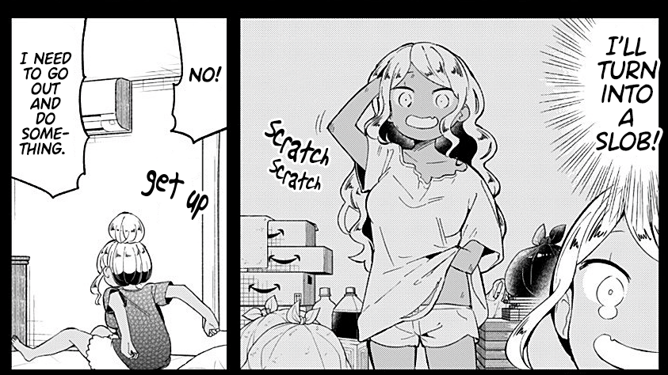
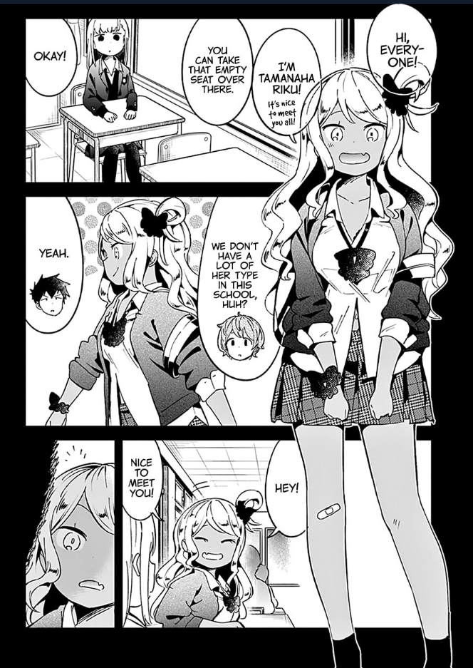

She's a gyaru, meaning part of a Japanese fashion subculture which I'm not super familiar with, but
has some very stylish people — I recommend checking it out. But despite the supposedly rebelious
looks, she's actually really feels like fitting in with the rest, just without washing away her
personality. Thing is, that task is exceptionally hard due to her social anxiety, so bonkers in fact
that it loops around to being funny.
I read the manga in the same age as the character, on Second Year of High School, and I actually
related to her, which I never did before to anyone. That is why she holds a special place in my
heart till this day. I especially get the fear of seeming too clingy or absent to your friends, as
the two people I hung out did those two things back and forth, putting doubt over my actions.
She's funny

Literally me for real. Every day at vacation is just like this, I can never relax.
Sour note: Where in the hell have all my manga screenshots gone
to?! Now I've lost all the bits I wanted to put on here, which dear me carefully archived (or I
guess just forgot on her old phone...). Now I'm gonna have to either read or pick apart by memory
the manga again, cause it's a niche character and the anime gets privilege on Google Image

The author is funny/strange
The other day I figured I'd read some other manga from the
author, and I slowly realized they're kind of a freak, but consistently funny too. Cloth Eating Girl is bonkers and looks completely NSFW until you click and
realize it's not, a gimmick consistent in their work. Thread carefully if you ever get interested,
though Aharen-San is generally chill, only suffering from full swimsuit spreads. Just have your hand
readily over the phone when reading on the subway and you should be golden.